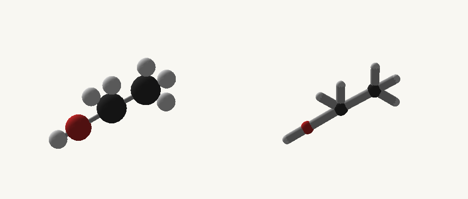

Avogadro guide · Minecraft 1.12.2 / Cleanroom
Use one rectangular viewport and one immutable options object per view. Drawing is client-only and runs on the render thread.
Examples are methods inside the downloadable companion classes. Copy the methods you need into your own class and keep the imports at the top. GuideModels contains the reusable chemical recipes; GuideTasks contains the operations. These files are documentation examples, not built-in library content.
Java model recipes · Java operations · Complete Groovy model script · Groovy client helpers
The complete Groovy model script can be saved as groovy/postInit/avogadro_examples.groovy. It includes the reusable GuideModels class and registers all ten chemical examples through the reloadable script registry. The separate client helper download is a reference for client integrations: keep it out of common postInit scripts and dedicated-server entry points. Java users should likewise copy common operations into their common class and keep screen/export operations in a client class.
import io.github.wurtzitane.avogadro.api.*;
import io.github.wurtzitane.avogadro.molecule.*;
// Client code only:
import io.github.wurtzitane.avogadro.api.client.*;
import io.github.wurtzitane.avogadro.client.export.*;
import java.util.List;
import java.util.Map;Java · method inside your host class; imports and full files below.
public static void drawStill(MoleculeStructure structure, int x, int y) {
var options = MoleculeRenderOptions.builder().orientation(25, 20, 0).rotationSpeed(0).build();
AvogadroClientApi.render(structure, x, y, 240, 180, options, 0);
}Groovy · same API; place methods in your script or client helper as described.
static void drawStill(MoleculeStructure structure, int x, int y) {
def options = MoleculeRenderOptions.builder().orientation(25, 20, 0).rotationSpeed(0).build();
AvogadroClientApi.render(structure, x, y, 240, 180, options, 0);
}Pass definition.structure() from the client view. The structure must already be available; a registered definition is not required for finite custom geometry. Use GUI pixels, as reported by the current screen, rather than raw framebuffer dimensions.
Java · method inside your host class; imports and full files below.
public static MoleculeRenderOptions style() {
return MoleculeRenderOptions.builder().orientation(25, 20, 0).pan(0, 0).zoom(1)
.background(0xfff8f7f2).atomScale(1.15f).bondScale(.7f)
.palette(Map.of("O", 0xe45b55)).rotationSpeed(30).build();
}Groovy · same API; place methods in your script or client helper as described.
static MoleculeRenderOptions style() {
return MoleculeRenderOptions.builder().orientation(25, 20, 0).pan(0, 0).zoom(1)
.background(0xfff8f7f2).atomScale(1.15f).bondScale(.7f)
.palette(Map.of("O", 0xe45b55)).rotationSpeed(30).build();
}Java · method inside your host class; imports and full files below.
public static void draw(MoleculeStructure structure, double elapsedSeconds) {
// Call from GuiScreen.drawScreen, with GUI pixel coordinates.
AvogadroClientApi.render(structure, 20, 40, 320, 220, style(), elapsedSeconds);
}Groovy · same API; place methods in your script or client helper as described.
static void draw(MoleculeStructure structure, double elapsedSeconds) {
// Call from GuiScreen.drawScreen, with GUI pixel coordinates.
AvogadroClientApi.render(structure, 20, 40, 320, 220, style(), elapsedSeconds);
}| Option | Units / default | Practical use |
|---|---|---|
| orientation(yaw,pitch,roll) | Degrees; zero when omitted | Choose an initial view |
| pan(x,y) | GUI pixels; 0,0 | Move the model within its viewport |
| zoom(value) | Positive multiplier; 1 | 1 fits; larger numbers zoom in |
| background(argb) | Nullable ARGB; null leaves existing background | Use alpha FF for an opaque panel |
| atomScale / bondScale | Positive multipliers; 1 / 1 | Emphasize atoms or thin bonds |
| palette(map) | Element → RGB override | Color only this draw; other views remain independent |
| rotationSpeed(value) | Degrees per second; 0 | 0 stays still; pass elapsed seconds for rotation |
| cubic(true) | Default follows appearance preference | Use cube-shaped atom geometry |
0xfff8f7f2. Export background is RGB, such as 0xf8f7f2. Mixing them up can produce an unintended transparent viewport.Avogadro draws the selected Minecraft bitmap letters as pixel shapes, without smoothing or fractional stroke widths. Small chemical numbers use fixed pixel patterns: subscripts sit lower, digits inside a count stay close, and extra space separates the count from the next element. The shared font adapter measures the same advances it draws.
Pixel-font label scales snap to whole framebuffer pixels. When centering your own labels, use MoleculeText.pixelAlignedScale(requestedScale) for both measurement and drawing. Custom item fonts keep their own renderer; other resource-pack formats and extended characters use the existing font fallback.
Java · method inside your host class; imports and full files below.
public static void compareStyles(MoleculeStructure structure) {
var large = MoleculeRenderOptions.builder().atomScale(1.6f).bondScale(.6f).build();
var fine = MoleculeRenderOptions.builder().atomScale(.8f).bondScale(1.2f).build();
AvogadroClientApi.render(structure, 10, 30, 220, 180, large, 0);
AvogadroClientApi.render(structure, 240, 30, 220, 180, fine, 0);
}Groovy · same API; place methods in your script or client helper as described.
static void compareStyles(MoleculeStructure structure) {
def large = MoleculeRenderOptions.builder().atomScale(1.6f).bondScale(.6f).build();
def fine = MoleculeRenderOptions.builder().atomScale(.8f).bondScale(1.2f).build();
AvogadroClientApi.render(structure, 10, 30, 220, 180, large, 0);
AvogadroClientApi.render(structure, 240, 30, 220, 180, fine, 0);
}
Options affect only the requested draw. The renderer clips the background and model to the supplied rectangle and restores the caller’s graphics state. Geometry styles belong in geometry cache identities; camera angles and time do not. Avogadro bypasses cached animation frames when they cannot represent the requested options.
| Input / state | Implementation advice |
|---|---|
| Drag to rotate | Store yaw/pitch in your screen; rebuild options after input |
| Drag to pan | Store pixel offsets per viewport |
| Scroll to zoom | Clamp a positive zoom value to your preferred range |
| Pause | Stop advancing elapsed time; keep the last successful geometry |
| Reset | Reset your screen’s camera values; do not edit atom coordinates |
| HEI built-in controls | Left drag rotates, right drag pans, wheel zooms, middle click resets |
Create options when settings change instead of allocating them for every draw. Calculate elapsed time from a monotonic start time. The same geometry/options/time produce the same rotation; do not supply absolute wall-clock seconds if you want easy replay.
Java · method inside your host class; imports and full files below.
public static void fluidTooltip(FluidStack contents, Runnable drawTooltip) {
// Use when your integration draws an ordinary tooltip for these contents.
AvogadroClientApi.withFluidTooltip(contents, drawTooltip);
}Groovy · same API; place methods in your script or client helper as described.
static void fluidTooltip(FluidStack contents, Runnable drawTooltip) {
// Use when your integration draws an ordinary tooltip for these contents.
AvogadroClientApi.withFluidTooltip(contents, drawTooltip);
}Pass the full stack so NBT-qualified associations remain available. Run the ordinary tooltip draw inside the callback. This supplies context for the integration; it is not a second molecule registration.
Put screen, Minecraft, renderer, and export references in client-only classes/proxies. Common registration and geometry APIs can run on a dedicated server. A rendering call requires a live OpenGL context; do not call it from a worker thread or resource parser.